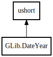

GLib.DateYear – glib-2.0 Reference Manual
Packages
glib-2.0
GLib
DateYear
get_monday_weeks_in_year
get_sunday_weeks_in_year
is_leap_year
valid
BAD_YEAR
DateYear
Object Hierarchy:

Description:
public
struct
DateYear
:
ushort
Namespace:
GLib
Package:
glib-2.0
Content:
Methods:
public
uchar
get_monday_weeks_in_year
()
public
uchar
get_sunday_weeks_in_year
()
public
bool
is_leap_year
()
public
bool
valid
()
Fields:
public
static
DateDay
BAD_YEAR
Inherited Members:
All known members inherited from struct ushort
MAX
MIN
clamp
max
min
to_string